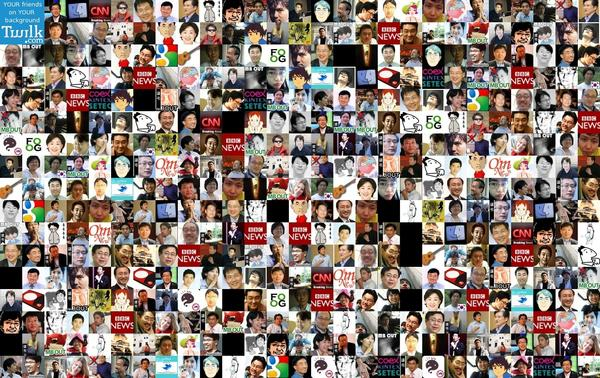

POSTS 트위터가 매력적인 개인적 이유 September 24, 2009 트위터가 매력적인 개인적 이유 이용자들 나이대가 비슷 30, 40대 그래서 비슷한 관심사 (정치)성향이 비슷-왼쪽 ㅎ 무지 빠른 새소식(특히 IT 관련) 현재 이슈를 파악할 수 있음 인맥 넓히기(활발한 오프라인 모임들) 내가 following하고 있는 분들. 무지 많은것 같지만 106명 밖에 안됨.  트위팅을 거의 안해서 나를 follow 하고 있는 52분께는 죄송. ㅋ